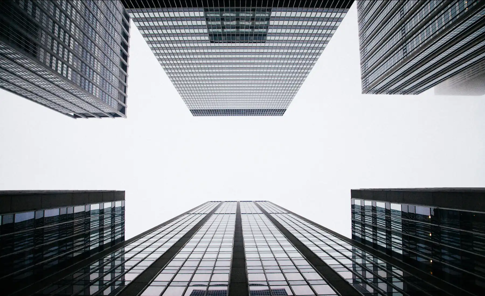
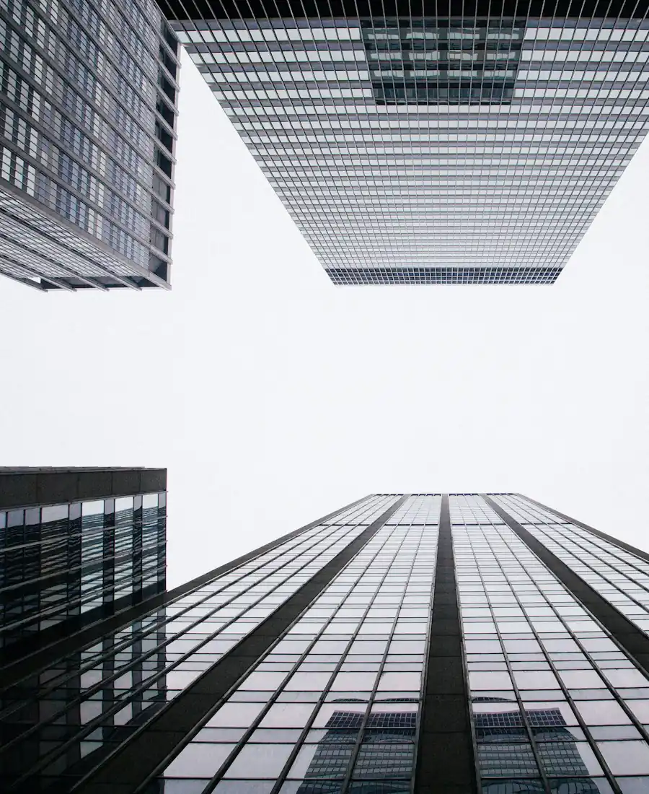
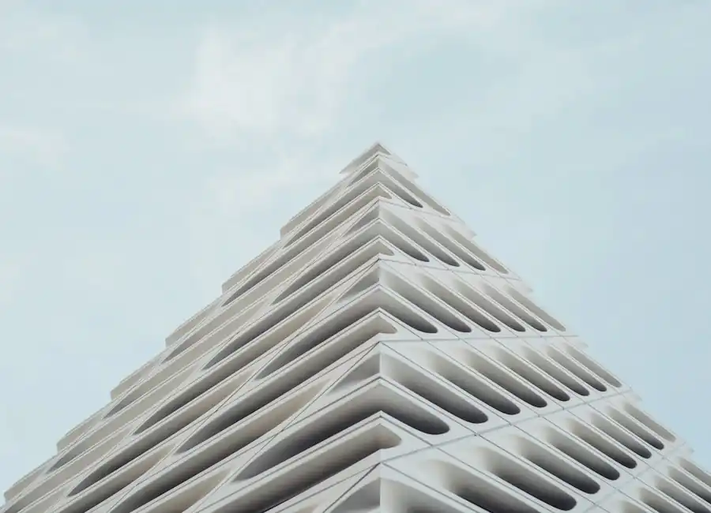

Porto, 2026
Glass and fog
Porto's new waterfront tower on the one morning the river fog climbed higher than the building.

The architects asked for a picture of the tower for the cover of their monograph - finished, empty, before the tenants moved in. I went back eleven mornings for the fog.
On the twelfth it rose off the Douro and swallowed the top floors. I stood at the foot of the glass and let the sky do the rest: one frame on the X2D, then the fog was gone.
- Camera
- Hasselblad X2D, 21 mm
- Exposure
- 1/250 s at f/8
- For
- Atelier Ribeira, architects
- Prints
- 60 × 90 cm, edition of 10

